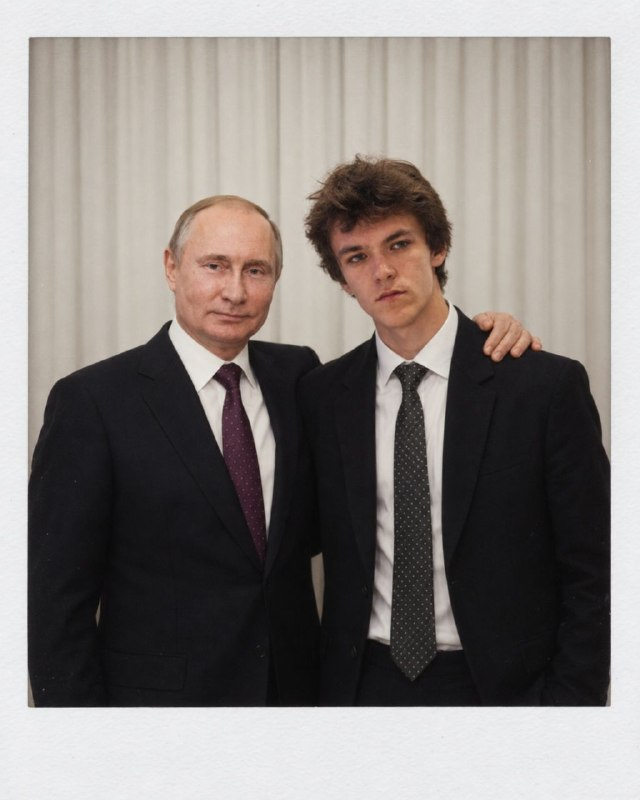

Заказчик известен → обученная модельLightGBM · R-long
Только описание → формулаОтдельная настройка опыта
Проверка и фильтрация поставщиков
01 · Проверяем факты
Нет источника → нет факта
СтатусРольМСП
Значение сверяется с сохранённой страницей
02 · Обязательный отсев
Подтверждён запрет → исключаем
РНПБанкротствоЛиквидацияПрекращение
Неизвестный статус сам по себе не исключает
03 · Условия заказчика
Не проходит условие → исключаем
МСПРольЮЛ / ИПРегионРабота у заказчикаМин. score
«Только МСП» требует подтверждения
Все выбранные условия — одновременноИсторический тест не использует сегодняшние статусы
Проверка на истории закупок
81%
Победитель — в первой десятке
Электронный магазин · победитель знаком заказчику · 590 закупок
Другой срез: новые для заказчика поставщики · 889 закупок
R-long · сохранённый исторический тест · независимая проверка ещё предстоит
Результат на сайте и подключение
Поиск → ранжирование → фильтры → проверяемый список
01
Подобрать
По описанию лота
02
Проверить
Лоты и факторы оценки
03
Выгрузить
Список в XLSX
Предлагаем пилот и независимую проверку
REST API / OpenAPI готовы. Ссылка из карточки закупки: /search?lot=N. Подключение к АИС ГЗ — после согласования.
Наша команда
ИИ бланки
Александр Лесницкий

Михаил Анцев
Иван Резников
Иван Пушкин
Александр Чичерин
Митрандир · подбор поставщиков с объяснением↓ Вопросы
Оценка и порядок поставщиков
S = 0.40 F + 0.20 E + 0.15 R + 0.10 A + 0.07 G + 0.08 P
F · товар
0.8 (0.5 B + 0.5 N) + 0.2 D
B — нормированный BM25. N — совпадение слов названия. D — совпадение ОКПД2. Без кода — текстовая часть.
E · опыт
Похожие лоты и победы. Логарифмическое насыщение. Порог — не ниже максимума среди кандидатов запроса.
A · активность G · география
A: давность участия, период полураспада 90 дней.
G: регион компании относительно региона запроса.
Нет заказчика → порядок по формуле. Есть заказчик → порядок LightGBM на прежних признаках. R — индикатор по истории, не гарантия надёжности. P — масштаб НМЦК, не цена исполнения. Без НМЦК вес P распределяется между остальными факторами.
Методика исторической проверки
Историядо 01.07.2025
Проверкаиюль–сентябрь 2025
Независимый тестещё предстоит
Один срез
889 одинаковых запросов. Победитель новый для заказчика.
Релевантны участники лота; в АИС ГЗ — победитель.
Одна метрика
Средняя доля участников, найденных в первой десятке.
0,420 / 0,139 ≈ 3,0. Не вероятность поставки.
Границы сравнения
L-long / B-inc. Измерение до изменений сценария и формулы.
У истории заказчика мало данных о новых компаниях.
81%: winner@10 = 0,8051, Электронный магазин, знакомый победитель, 590 закупок. Источник: сохранённые отчёты и парное сравнение, F-43. Сегодняшние реестровые статусы и внешние новые компании в оценку не входят.
Стек по компонентам
Интерфейс
React 19.3TypeScript 5.9Vite 8.3
API и оценка
Python 3.12FastAPI 0.142Pydantic 2.13
Данные
DuckDB 1.5PyArrow 25Parquet
Поиск и хранение
bm25s 0.3SQLite · кешPostgreSQL*
* PostgreSQL — вариант Docker-развёртывания. Показанный запрос выполнен на Parquet.
Порядок: LightGBM R-long (D-171). Без модели — формула D-198. Векторная ветка выключена. Лимиты: до 500 текстов → до 200 компаний. Подбор и объяснения работают без LLM.
Поставщики без истории
ЕСТЬ В ИСТОРИИ
604 452 лота 44 196 ИНН
Позиции → лоты → участники
NULL: КПП в 191 359 участиях; ИНН заказчика в 8 449 извещениях.
+ОТДЕЛЬНЫЙ БЛОК «НОВЫЕ»
ОКПД2 → ОКВЭД / ГИСП → реестры МСП и Минпромторга
ИНН отсутствует в истории + проверка источников фактов
Лот 5903085: 10 новых вне истории (одна — по реестру ГИСП, остальные по ОКВЭД).
ОКВЭД — основание кандидата, не подтверждение нужного товара
 Python
Python DuckDB→ Parquet / PostgreSQL
DuckDB→ Parquet / PostgreSQL